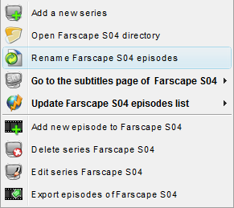

| The Series Panel PopUp Menu |
|---|
|  |
|
| Enabled popup menu |
Disabled popup menu |
When right clicking on the series panel the series popup menu is shown.
If the clicking is on a series row the enabled popup menu is shown else the disabled one.
The following menu items are available:
- Add New Series:Brings up the [Add new Series Panel]
for adding a new series in the database.
- Download Subtitles...:Opens the default browser and navigates to the subtitles
page for the current series (The link is provided in the
[Add/Edit Series Panel]).
- Open ... directory:Opens the default browser and navigates to the local directory that contains the series episodes
(The link is provided in the [Add/Edit Series Panel]).
- Update... Episodes list:Connects to internet and downloads episodes data of the current selected series.
- Add New Episode...:Brings up the [Add new episode Panel]
for adding a new episode to the current series.
- Delete Series:Deletes the current series (and its episodes) from the database.
- Edit Series...:Brings up the [Add/Edit Series Panel]
for editing the current series.
- Export episodes of...:Exports episodes of the current series to file for sharing
series episodes.
|